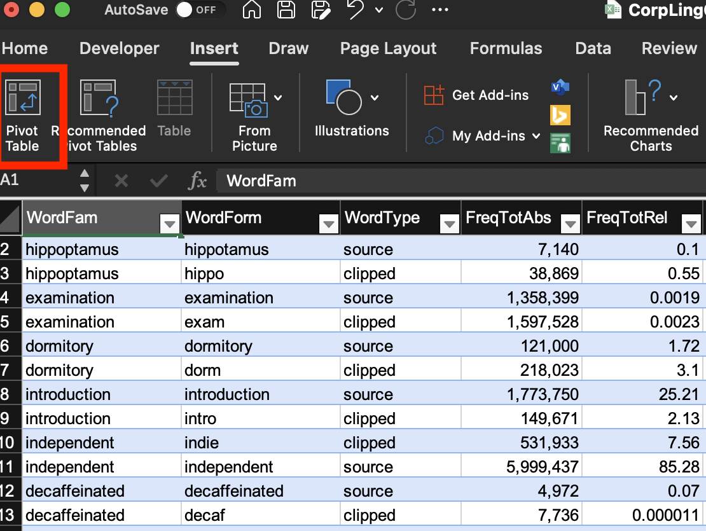
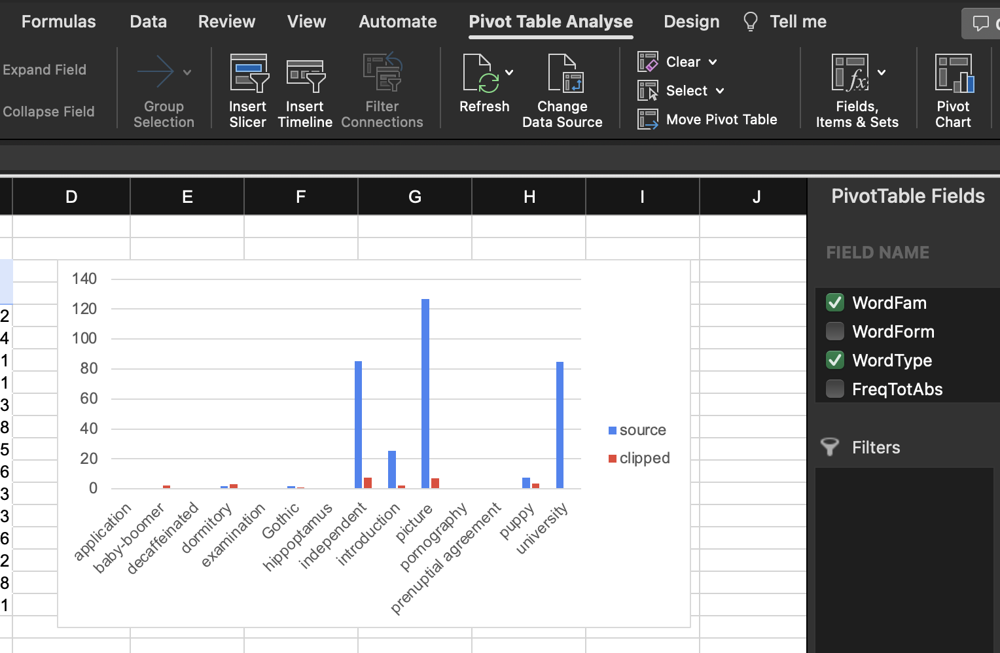

06 Corpora: theories, methods, and applications
Fundamentals of corpus linguistics
What is corpus linguistics about?
- Corpus linguistics is a research methodology within the field of linguistics that focuses on the systematic study of language using large and diverse collections of authentic texts, known as corpora.
- These collections of language data, either written or spoken, provide a comprehensive and empirical basis for the analysis of
- language use (e.g. collocational patterns such as pretty woman)
- linguistic variation across different text types or communities (e.g. neologisms such as smash)
- language change (e.g. going to future)
- The primary goal of corpus linguistics is to investigate linguistic phenomena and patterns by examining real-world language usage.
- This approach contrasts with more traditional linguistic methods that rely heavily on introspection and theoretical speculation (e.g. Chomsky).
- Corpus linguistics has gained significant momentum in recent years, thanks to advances
- in data (e.g. social-media and web corpora) and
- methods (e.g. social-network analysis, machine learning).
What is corpus linguistics good for?
Corpus linguistics as a usage-based approach to linguistic analysis
Corpus linguistics is highly valuable from a usage-based approach to linguistics, as it emphasises the importance of actual language use in shaping linguistic knowledge and structure.
The usage-based perspective posits that linguistic structure and knowledge emerge from the patterns and regularities that speakers encounter in their experience with language.
In this context, corpus linguistics provides a powerful toolset for investigating these patterns and regularities, offering several advantages:
- Authentic language data
- corpus linguistics relies on large and diverse collections of authentic texts, which represent real-world language use. This ensures that the patterns and structures uncovered through corpus analysis are grounded in genuine linguistic behaviour, rather than relying on idealised or artificial examples.
- Quantitative approach
- corpus linguistics allows for the quantitative analysis of linguistic phenomena, such as frequency counts and statistical measures. This enables researchers to identify and describe patterns and regularities that emerge from language use, supporting the usage-based claim that linguistic structure is shaped by frequency and distributional patterns in the input.
- Collocations and constructions
- the usage-based approach posits that language is composed of form-meaning pairings, known as constructions, which range from morphemes and words to idiomatic expressions and complex syntactic structures. Corpus linguistics offers tools for identifying and analysing collocations and constructions in large datasets, contributing to our understanding of the relationships between form, meaning, and use.
- Variability and context sensitivity
- corpus linguistics enables the examination of language use across different contexts, genres, and registers. This allows researchers to investigate how linguistic features and structures vary and adapt to different situations, providing insights into the dynamic nature of language and its sensitivity to context, which is a key aspect of the usage-based approach.
- Language change and development
- corpus linguistics can be applied to diachronic and synchronic data, allowing researchers to track language change over time and compare different stages of language development. This helps to shed light on the emergence and evolution of linguistic structures, which is of particular interest to usage-based theorists who seek to explain language change as a result of cumulative changes in usage patterns.
- Data-driven language teaching and language learning
- the usage-based approach emphasises the importance of exposure to authentic language input in the acquisition process. Corpus linguistics can inform the development of language teaching materials and methods, by providing insights into the most frequent and relevant structures, vocabulary, and collocations that learners need to acquire.
Key concepts
Corpus
A corpus is a large, structured collection of texts that serves as the basis for linguistic analysis. Corpora can be general, representing a wide variety of language use, or specialised, focusing on specific genres, registers, or domains.
Annotation
Annotation refers to the process of adding metadata or linguistic information to a corpus, such as part-of-speech tags, syntactic structure, or semantic roles. This additional information can facilitate more in-depth and accurate analyses.
- metadata: data about language use on several levels:
- corpus
- texts: author, text type, register, topic
- paragraphs or utterances
- running words (tokens): word class, lemmatisation
- tokens
- walk
- walks
- walked
- type, lexeme, lemma
- WALK \(^v\)
- tokens
- running words (tokens): word class, lemmatisation
- paragraphs or utterances
- texts: author, text type, register, topic
- corpus
Concordance
A concordance is a tool that allows researchers to search for specific words, phrases, or patterns in a corpus and display the results in context. This helps researchers to examine language patterns and identify trends across various texts.
Collocations
Collocation refers to the co-occurrence of words within a specific context or proximity. Studying collocations can reveal important information about word usage, meaning, and associations.
Frequency
Frequency analysis involves counting the occurrences of linguistic features, such as words or structures, within a corpus. This helps researchers identify patterns and trends, as well as compare language use across different corpora.
N-grams
N-grams are sequences of n contiguous words or linguistic units within a text. They can be used to study word combinations, patterns, and structures in a corpus.
- Example: The cat sat on the mat.
- bigrams (2-grams)
- The cat
- cat sat
- sat on
- …
- bigrams (2-grams)
- Example corpus: Google Books Ngram Viewer – a web-based tool that allows users to search and visualise word frequencies across millions of books from 1500-2019.
Register
Register refers to the language variety used in specific contexts or situations, characterised by particular linguistic features, such as vocabulary, grammar, and style. Examining registers can help researchers understand language variation and adaptation.
Hilpert et al. (2023): Studying clippings with corpus data
Hilpert, Martin, David Correia Saavedra & Jennifer Rains. 2023. Meaning Differences between English Clippings and Their Source Words: A Corpus-Based Study. ICAME Journal 47 (1): 19–37. https://doi.org/10.2478/icame-2023-0002
Research questions
“This paper uses corpus data in order to study English clippings such as dorm (< dormitory), memo (< memorandum), or quake (< earthquake). More specifically, we investigate meaning differences between clippings and their source words. Are there semantic or pragmatic differences between pairs such as dorm and dormitory, and if so, what are they? Is it possible to formulate generalisations that capture how clippings and their source words relate to one another with regard to meaning? How should these relations be described?” (Hilpert et al. 2023: 19)
Abstract
“This paper uses corpus data and methods of distributional semantics in order to study English clippings such as dorm (< dormitory), memo (< memorandum), or quake (< earthquake).
We investigate whether systematic meaning differences between clippings and their source words can be detected.
The analysis is based on a sample of 50 English clippings.
Each clipping is represented by a concordance of 100 examples in context that were gathered from the Corpus of Contemporary American English (COCA).
We compare clippings and their source words both at the aggregate level and in terms of comparisons between individual clippings and their source words.
The data show that clippings tend to be used in contexts that represent involved text production, which aligns with the idea that clipped words signal familiarity with their referents.
It is further observed that individual clippings and their source words partly diverge in their distributional profiles, reflecting both overlap and differences with regard to their meanings.
We interpret these findings against the theoretical background of Construction Grammar and specifically the Principle of No Synonymy.”
Practice: using corpus data for lexicology
Frequency analysis of clippings
Using Sketch Engine
Sketch Engine tutorial: https://wuqui.github.io/SkEtut/
Data analysis and visualisation in Excel
-

-

-

-

Potential further analyses
- frequency over time in the English Trends (2014–today) corpus
- frequency by text type in enTenTen21 or COCA
- long-term diachronic trends via english-corpora.org: NOW, COCA
References
Davies, Mark. 2008–. The Corpus of Contemporary American English (COCA). https://www.english-corpora.org/coca/.
Hilpert, Martin, David Correia Saavedra & Jennifer Rains. 2023. Meaning Differences between English Clippings and Their Source Words: A Corpus-Based Study. ICAME Journal 47 (1): 19–37. https://doi.org/10.2478/icame-2023-0002